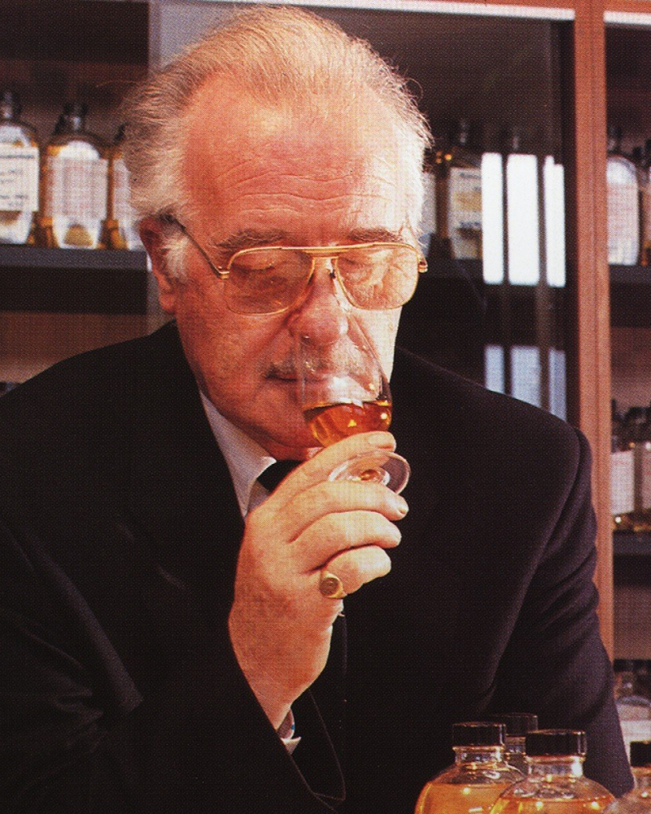

발렌타인의 위스키 블렌더들을 만나보세요
발렌타인은 5명의 마스터 블렌더들의 영향으로 유럽 내 스카치 위스키 1위는 물론 세계 2위라는 명성을 얻게 되었습니다 (2018년 ISWR 기준).
그리고 이제 발렌타인은 전 세계 어디에서나 접할 수 있는, 고품질의 숙성 블렌디드 스카치 위스키를 여러분들에게 제안 드리고 있습니다.
-
조지 발렌타인
1824
(GEORGE BALLANTINE)‘발렌타인’이라는 브랜드는 창업자이자 스코틀랜드에서 식료품점을 운영하던 조지 발렌타인의 이름에서 유래되었습니다. 그는 생계를 위해 찻잎도 블렌딩 했던 것으로도 알려져 있죠.
조지는 본인이 구매했던 위스키에 만족하지 못했고, 이에 자신만의 위스키를 직접 블렌딩하기 시작하였습니다. 그는 남과 다른, 자신만의 길을 걸어간 진정한 인물이었고, 그의 위스키가 스타덤에 오른 것도 바로 이러한 야망 덕분이었습니다.
이후 조지 발렌타인은 아들인 조지 2세, 아치볼드, 다니엘 그리고 손자인 조지 3세에게 자신만의 위스키 블렌딩 지식을 전했습니다. 그리고 1985년, 발렌타인는 빅토리아 여왕으로부터 최고 명품에게 수여되는 ‘왕실 위스키 인증서(Royal Warrant)’를 획득하게 되었고, 이는 회사의 권위있는 명성을 뒷받침해주었습니다.
발렌타인가는 1910년에 처음으로 “발렌타인 파이니스트”를 출시하였으며, 이는 아직도 가장 오래된 레시피로 남아있습니다. “발렌타인 파이니스트”는 여전히 저희 제품군에서 가장 인기가 많으며, 품질은 오랜 시간이 흘러도 지속된다는 것을 증명하고 있죠. -
조지 로버트슨
1937
(GEORGE ROBERTSON)다음 마스터 블렌더는 발렌타인 가문과 혈연 관계는 아니었지만, 또 다른 ‘조지’였습니다. 그는 제1차 세계 대전과 13년 간의 금주령 이후에 해당 직위를 이어받았습니다. 조지 로버트슨은 세계 최초이자 최다 수상을 기록하고 있는 “발렌타인 17년”과 “발렌타인 30년”을 블렌딩 한 것으로 유명합니다.
-

잭 가우디
1959
(JACK GOUDY)잭 가우디는 ‘발렌타인 12년’을 블렌딩함으로 우수한 위스키를 생산하는 브랜드의 전통을 이어갔습니다. 나아가 그는 두 명의 미래의 마스터 블렌더를 육성시켜, 발렌타인의 품질이 지속될 수 있도록 만들었죠. 잭은 그들에게 최상의 스카치 위스키를 소싱하는 것과 더불어 최고의 아메리칸 오크통에서 숙성 시키는 것이 얼마나 중요한 지 가르쳤습니다. 그 이후로 매년 수입되고 있는 미국산 오크 캐스크는 뛰어난 품질과 풍미를 변함없이 유지해오고 있습니다.
-
로버트 힉스
1994
(ROBERT HICKS)로버트 힉스는 잭 가우디의 첫번째 제자이자 위스키계의 완벽주의자로 알려져 있습니다. 로버트는 잭과 24년간 함께 일한 후에 마스터 블렌더의 직위를 받게 되었고, 그는 위스키 시향과 관련해 “신이 내린 후각의 소유자”로도 알려져 있습니다.
-
샌디 히슬롭
2005
(SANDY HISLOP)현재 발렌타인의 마스터 블렌더이자 잭 가우디의 두번째 제자는 샌디 히슬롭입니다. 샌디는 발렌타인의 혁신을 주도하고 있는 인물입니다. 그는 역대 마스터 블렌더 중 가장 많은 종류의 위스키를 블렌딩한 것으로도 알려져 있죠. 샌디는 “발렌타인 브라질”과 “발렌타인 7년 버번 피니쉬”와 같은 새로운 위스키 테이스트를 시장에 출시했습니다.
나아가, 샌디는 발렌타인 위스키 라인업 중 가장 높은 연산을 자랑하고 있는 “발렌타인 40년”을 블렌딩하였으며, 본인 자신도 이를 특히 자랑스러워 한답니다. 그는 매일 250개의 샘플들을 지속적으로 관찰하고 시향함으로 발렌타인의 행로를 그리고 있습니다. 이렇듯 샌디가 발렌타인과 함께 어디로 향할지 지켜보는 것은 몹시 흥미로운 일입니다.